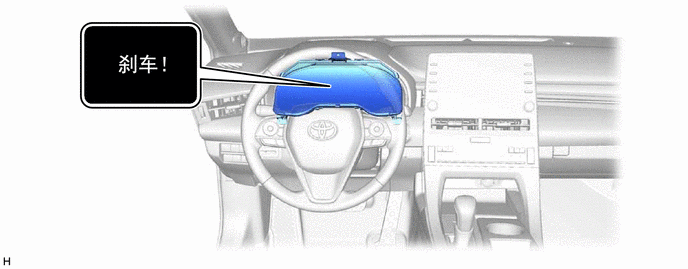
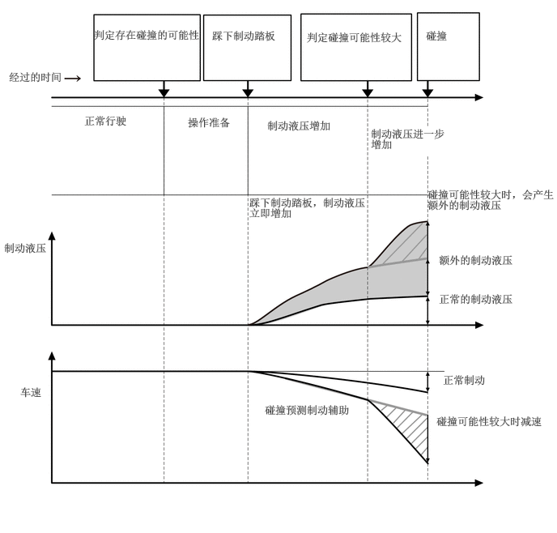
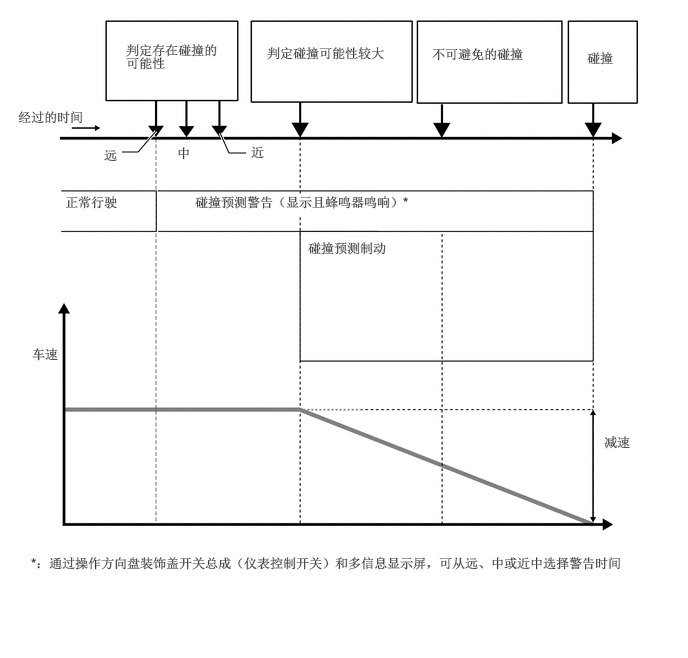

主要零部件的功能
| 项目 | 功能 | |
|---|---|---|
|
*1：汽油车型 *2：HV 车型 *3：带抬头显示装置的车型 *4：带自适应可调悬架系统的车型 |
||
| 行驶辅助 ECU 总成 | 根据接收自各传感器的信息确定是否即将发生碰撞。如有必要，则输出制动辅助备用请求信号和碰撞预测制动请求信号。 | |
| 毫米波雷达传感器总成 | 向前发射毫米雷达波，利用反射的雷达波检测前方是否存在车辆、车距以及相对速度，并将该信息传输至行驶辅助 ECU 总成。 | |
| 前向识别摄像机 | ·
从单目摄像机获取前方车辆和行人的信息，然后将此信息传输至行驶辅助 ECU 总成。 ·
操作摄像机加热器以防前向识别摄像机前方的挡风玻璃冷凝。 |
|
| 带加热器的前向识别罩分总成 | 摄像机加热器 | 根据来自前向识别摄像机的电流加热板式加热器。 |
| 制动执行器总成*1 | 防滑控制 ECU | ·
接收来自行驶辅助 ECU 总成的制动辅助备用请求信号并将制动辅助切换至备用模式。输入主缸压力信号时，激活制动辅助。 ·
接收来自行驶辅助 ECU 总成的碰撞预测制动请求信号，并施加制动。 ·
将车速信号传输至行驶辅助 ECU 总成。 |
| 带主缸的制动助力器总成*2 | ||
| 转速传感器 | 分别检测 4 个车轮的车轮转速并将信号传输至防滑控制 ECU。 | |
| 空气囊 ECU 总成 | 横摆率传感器 | 检测车辆横摆率和横向/纵向减速度并将信号传输至行驶辅助 ECU 总成。 |
| 转向传感器 | 检测转向角度和方向并将信号传输至行驶辅助 ECU 总成。 | |
| 刹车灯开关总成 | 接收来自防滑控制 ECU 的刹车灯点亮请求信号并点亮刹车灯。 | |
| VSC OFF 开关 | 在 VSC OFF 模式下，禁用碰撞预测制动和碰撞预测制动辅助操作。 | |
| 组合仪表总成 | PCS 警告灯 | ·
根据来自行驶辅助 ECU 总成的信号，点亮以警告驾驶员。 ·
系统出现故障或暂时禁用时点亮。 ·
碰撞预测系统不可用时点亮。 ·
使用 VSC OFF 开关，禁用碰撞预测制动和碰撞预测制动辅助操作时点亮。 |
| 多信息显示屏 | ·
根据来自行驶辅助 ECU 总成的信号显示警告信息，以通知或警告驾驶员系统的状况。 ·
在设定显示功能下选择 PCS OFF 模式时禁用碰撞预测系统操作。 ·
在设定显示功能下选择远/中/近时改变碰撞预测警告时间。 |
|
| 主警告灯 | 根据来自行驶辅助 ECU 总成的信号，点亮以警告驾驶员。 | |
| VSC OFF 指示灯 | VSC 不可用时点亮。 | |
| 蜂鸣器 | 根据来自行驶辅助 ECU 总成的信号鸣响以警告驾驶员。 | |
| ECM*1 | ·
检测换档杆位置信号和加速踏板开度并发送该信息至行驶辅助 ECU 总成。 ·
根据来自行驶辅助 ECU 总成的信息执行发动机输出控制。 |
|
| 混合动力车辆控制 ECU*2 | ·
检测换档杆位置信号和加速踏板开度并发送该信息至行驶辅助 ECU 总成。 ·
根据来自行驶辅助 ECU 总成的信息执行混合动力系统输出控制。 |
|
| 仪表反射镜分总成*3 | 抬头显示屏上显示警告信息以警告驾驶员。 | |
| 方向盘装饰盖开关总成 | 切换组合仪表总成内多信息显示屏的显示。 | |
| 主车身 ECU（多路网络车身 ECU） | 将车辆规格信号输出至行驶辅助 ECU 总成。 | |
| 网络网关 ECU | 在 CAN 通信总线间传输信号。 | |
| 减振器控制 ECU*4 | 根据来自行驶辅助 ECU 总成的控制请求信号控制减振器的减振力。 | |
功能
PCS（碰撞预测系统）
碰撞预测系统利用雷达传感器和摄像机传感器检测本车前方的车辆和行人。系统判定与车辆或行人很有可能发生正面碰撞时，警告工作以促使驾驶员进行规避操作且潜在制动压力升高以协助驾驶员避免碰撞。如果系统判定与车辆或行人发生正面碰撞的可能性极高，则自动施加制动以帮助避免碰撞或减轻碰撞冲击。
可停用/启用碰撞预测系统并更改警告时间。
碰撞预测警告
系统判定很有可能发生正面碰撞时，蜂鸣器将鸣响且多信息显示屏和仪表反射镜分总成* 上将显示警告信息，以促使驾驶员进行规避操作。
*：带抬头显示装置的车型

碰撞预测制动辅助
系统判定很有可能发生正面碰撞时，系统施加比之前踩下制动踏板时更大的制动力。
碰撞预测制动
系统判定很有可能发生正面碰撞时，将警告驾驶员。如果系统判定极有可能发生正面碰撞，则自动施加制动以帮助避免碰撞或降低碰撞速度。
悬架控制（带自适应可调悬架系统的车型）
系统判定极有可能发生正面碰撞时，自适应可调悬架系统将控制减振器的减振力以帮助保持正确车辆姿态。
工作条件
工作条件
碰撞预测系统启用，系统判定很有可能与车辆或行人发生正面碰撞。在下列车速下各功能可用：
车速在约 7 和 110 mph（10 和 180 km/h）之间。（车速约在 7 至 50 mph（10 至 80 km/h）之间时可检测到到行人。）
本车和前方车辆或行人之间的相对速度约为 7 mph (10 km/h) 或更高。
车速在约 20 和 110 mph（30 和 180 km/h）之间。（车速约在 20 至 50 mph（30 至 80 km/h）之间时可检测到到行人。）
本车和前方车辆或行人之间的相对速度约为 20 mph (30 km/h) 或更高。
车速在约 7 和 110 mph（10 和 180 km/h）之间。（车速约在 7 至 50 mph（10 至 80 km/h）之间时可检测到到行人。）
本车和前方车辆或行人之间的相对速度约为 7 mph (10 km/h) 或更高。
在下列情况下系统可能不工作：
汽油车型：
断开并重新连接蓄电池端子后，车辆在一段时间内未行驶时
HV 车型：
断开并重新连接辅助蓄电池端子后，车辆在一段时间内未行驶时
换档杆置于 R 时
禁用 VSC 时（仅碰撞预测警告功能将工作）
行人检测功能
碰撞预测系统根据检测对象的大小、轮廓和动作来检测行人。但环境亮度和检测对象的动作、姿势和角度会妨碍系统的正确工作，因此可能无法检测到行人。
碰撞预测制动取消
碰撞预测制动功能工作期间，如果出现以下任一情况，则该功能将取消：
用力踩下加速踏板。
突然急转方向盘。
即使不可能发生碰撞系统也可能会工作的情况
在包括下列状况在内的某些情况下，系统可能会判定有发生碰撞的可能并工作。
经过车辆或行人时。
超过前方车辆过程中变道时。
超过正在变道的前方车辆时。
超过正在左/右转弯的前方车辆时。
驶过对面车道内停车以准备左/右转弯的车辆时
在与前方相邻车道内的车辆的相对位置可能改变的道路上（如弯曲道路）行驶时。
快速接近前方车辆时。
如果车辆前部升起或降低，如路面不平或上下起伏时。
接近路边物体（如护栏、电线杆、树木或墙壁）时。
弯道入口处的道路旁边有车辆、行人或物体时。
行驶在被构筑物包围的狭窄道路上（如隧道内或铁桥）时。
路面上或路旁有金属物体（井盖、钢板等）、台阶或凸起时。
横穿道路的行人距车辆非常近时。
通过道路上方有低矮建筑物的地方时（低矮的顶棚、交通标志等）。
从上坡路顶端的物体（广告牌等）下经过时。
快速接近收费站电动栏杆、停车场栏杆或其他打开又关闭的关卡时。
使用自动洗车系统时。
驶过可能会接触到车辆的物体或从物体下方行驶时，例如密草丛、树枝或横幅。
车辆被来自前方车辆的水、雪或灰尘等击中时。
在蒸汽或烟雾中穿行时。
道路或墙壁上的图案或绘画被误以为是车辆或行人时。
在反射无线电波的物体（如大型卡车或护栏）附近行驶时。
在电视台、广播电台、发电厂或其他存在强无线电波或电噪干扰的地点附近行驶时。
系统可能无法正常工作的情况
在包括下列状况在内的某些情况下，雷达传感器和摄像机传感器可能无法检测到车辆，以致妨碍系统正常工作：
迎面车辆正在接近本车时。
前方车辆为摩托车或自行车时。
接近某一车辆的侧面或前方时。
如果前方车辆后端较小（如空载卡车）。
如果前方车辆后端较低（如低底盘拖车）。
前方车辆载货长度超过其后保险杠时。
前方车辆离地间隙极高时。
前方车辆形状不规则时（如拖拉机或挎斗摩托车）。
太阳或其他光源直接照射在前方车辆上时。
车辆切到本车前方或出现在侧方时。
前方车辆进行突然操作时（如急转弯、突然加速或减速）。
突然切入前方车辆后面时。
前方车辆未处于本车正前方时。
在恶劣天气（如暴雨、大雾、大雪或沙尘暴）下行驶时。
车辆被来自前方车辆的水、雪或灰尘等击中时。
在蒸汽或烟雾中穿行时。
在环境亮度突然改变的地点（如隧道的入口或出口）行驶时。
强光（如太阳光等）或迎面车辆的前照灯直射摄像机传感器时。
周围区域较暗时（如黎明或黄昏，或在夜间或隧道内行驶时）。
汽油车型：
发动机起动后车辆在一段时间内未行驶。
HV 车型：
混合动力系统已起动后车辆在一定时间内未行驶。
左转/右转时或在左转/右转后数秒。
在弯道上行驶时或在弯道上行驶后数秒。
本车打滑时。
车辆前部被升起或降低时。
车轮错位时。
如果刮水器刮水片遮挡摄像机传感器。
车辆摇摆。
车辆以极高速度行驶时。
在山上行驶时。
如果雷达传感器或摄像机传感器错位。
在包括下列状况在内的某些情况下，可能无法获得充足的制动力，以致妨碍系统正常工作：
制动功能不能充分工作时（如在制动零件极冷、极热或潮湿的情况下）。
车辆未正确维护时（制动器或轮胎过度磨损，轮胎充气压力不当等情况）。
车辆在砂砾道路或其他打滑路面上行驶时。
雷达传感器和摄像机传感器可能无法检测到下列行人，从而妨碍系统正常工作：
身高低于约 3.2 ft. (1 m) 或高于约 6.5 ft. (2 m) 的行人。
身着加大尺寸服装（雨衣、长裙等）导致其轮廓模糊的行人。
携带大件行李、拿着雨伞等遮挡了其部分身体的行人。
向前弯腰或蹲下的行人。
推着手推车、轮椅、自行车或其他车辆的行人。
靠在一起的成群行人。
身着白色服装且看起来非常明亮的行人。
黑暗中（如在夜间或隧道内）的行人。
衣着颜色或亮度和周围环境几乎相同的行人。
墙壁、栅栏、护栏或大型物体附近的行人。
道路上金属物体（井盖、钢板等）上的行人。
行走速度较快的行人。
突然改变速度的行人。
从车辆或大型物体后方跑出的行人。
离车辆侧方（车外后视镜等）特别近的行人。
如果 PCS 警告灯闪烁或点亮且多信息显示屏上显示警告信息
碰撞预测系统可能暂时不可用或系统可能存在故障。
在下列情况下，恢复正常工作条件时，警告灯熄灭、信息消失且系统恢复运行：
雷达传感器或摄像机传感器或任一传感器的周围区域很热（如阳光直射时）时。
雷达传感器或摄像机传感器或任一传感器的周围区域很冷（如在极冷的环境下时）时。
前传感器脏污或覆盖有雪等时
摄像机传感器前方的挡风玻璃部分起雾或覆盖有冷凝物或冰时。
摄像机传感器被遮住时，如发动机罩打开或摄像机传感器附近的挡风玻璃粘有贴纸时。
如果即使车辆恢复正常但 PCS 警告灯继续闪烁或点亮或警告信息不消失，则系统可能出现故障。立即请丰田经销店对车辆进行检查。
如果 VSC 禁用
如果 VSC 禁用，则碰撞预测制动辅助和碰撞预测制动功能也禁用。
PCS 警告灯将点亮且多信息显示屏上将显示“VSC Turned Off Pre-crash Brake System Unavailable”（VSC 关闭碰撞预测制动系统不可用）。
系统控制
碰撞预测制动辅助
驾驶员在碰撞预测系统判定可能发生碰撞后踩下制动踏板时，制动液压力升高。如果发生碰撞的可能性仍然高，则制动液压力进一步升高。

碰撞预测制动
碰撞预测系统判定很有可能发生碰撞时，系统执行碰撞预测制动控制。

诊断
初始检查
汽油车型：
发动机开关置于 ON (IG) 位置约 3 秒后，行驶辅助 ECU 总成对系统进行初始检查。
HV 车型：
电源开关置于 ON (IG) 位置约 3 秒后，行驶辅助 ECU 总成对系统进行初始检查。
监控功能
完成初始检查后，碰撞预测系统准备运行。在此期间，行驶辅助 ECU 总成定期监视系统是否有故障。
诊断故障码 (DTC)
如果行驶辅助 ECU 总成检测到碰撞预测系统存在故障，则将 5 位数的诊断故障码 (DTC) 存入存储器中。